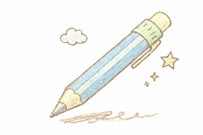
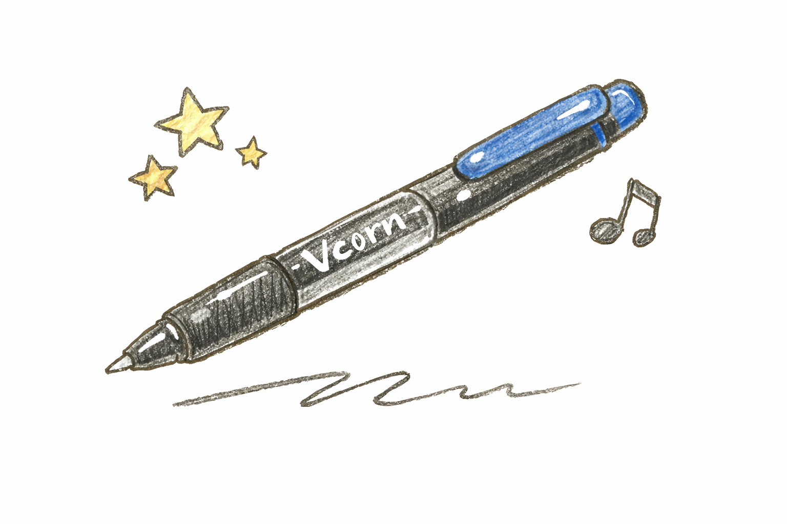
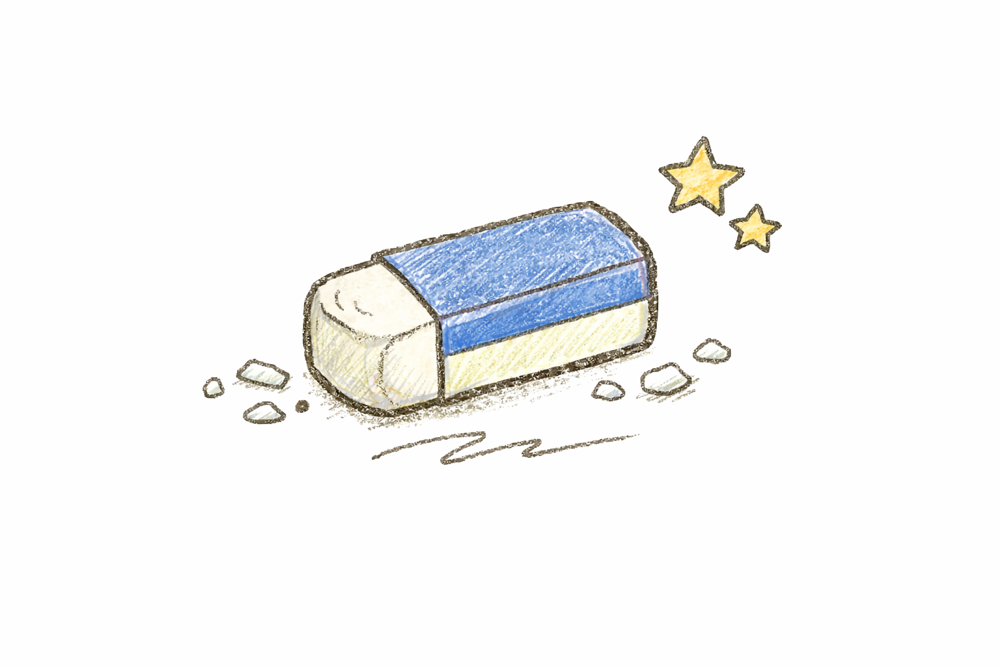
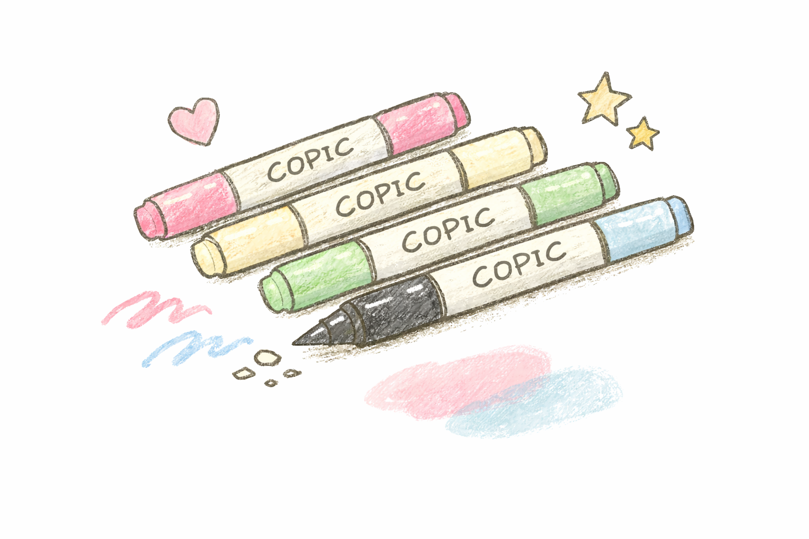
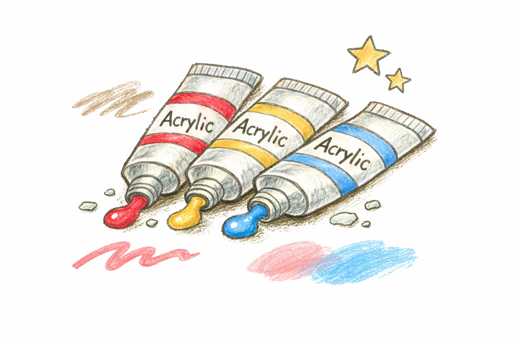
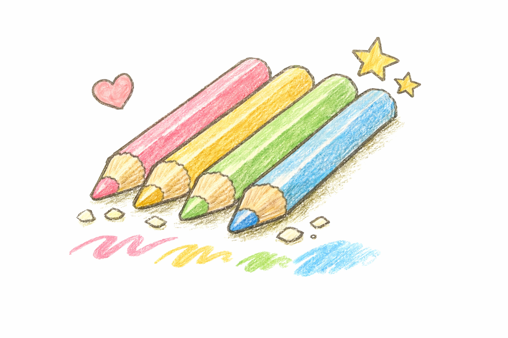
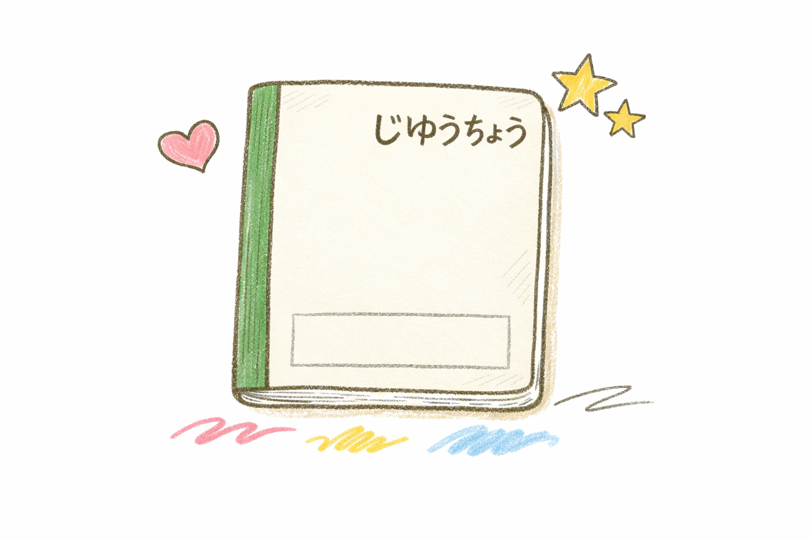

私のよく使う画材紹介
普段のらくがきで使ったいる画材をまとめています。最近はコピックを使うことが多いです。
シャーペン

下書きはいつもシャーペン。力を入れずに描けるので、ゆるい線が出しやすいです。
▲ 先頭へ戻るVコーン

線画に使うことが多いペン。線が綺麗に描けるので、よく使っています。
▲ 先頭へ戻る消しゴム

下書きを消すときや、整えるときに使います。描き直しやすいので安心して描けます。
▲ 先頭へ戻るコピック(最近いちばん使う)

淡い色が作りやすく、グラデーションも綺麗にできて、重ね塗りでふんわりした雰囲気を出せるのが好きなポイント。最近はコピックで描くことが多いです。
よく使う色
- パステル系：BV0000/Y000/G000/B000
- 濃い色：R46/Y18/B26
アクリル絵の具

自由に色を作ることができるので好きです。
▲ 先頭へ戻る色鉛筆

コピック上に重ねると柔らかい雰囲気になります。
▲ 先頭へ戻る100均の無地ノート

最近は100均の無地ノートを使っています、気軽に描けるところが好きで、紙が少し薄いぶんコピックのにじみ方が柔らかくなるのもお気に入りです。
▲ 先頭へ戻る画材まとめ表
| 画材 | 特徴 | 用途 |
|---|---|---|
| シャーペン | ゆるい線が描きやすい | 下書き |
| Vコーン | 線がきれいに出る | 線画 |
| コピック | 淡い色・グラデが得意 | 着色 |
| アクリル | 色を自由に作れる | 背景・厚塗り |
| 色鉛筆 | ふわっとした質感 | 仕上げの重ね塗り |